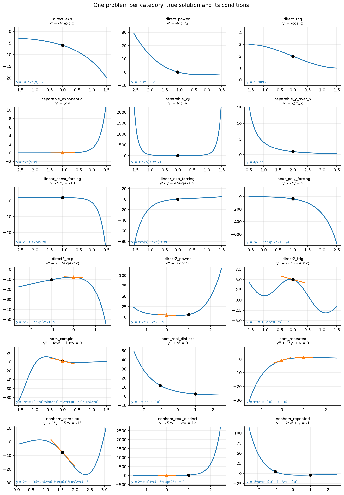
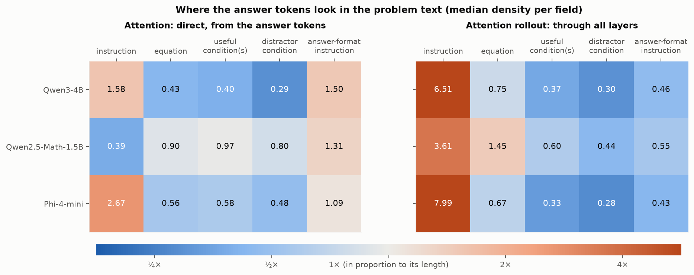
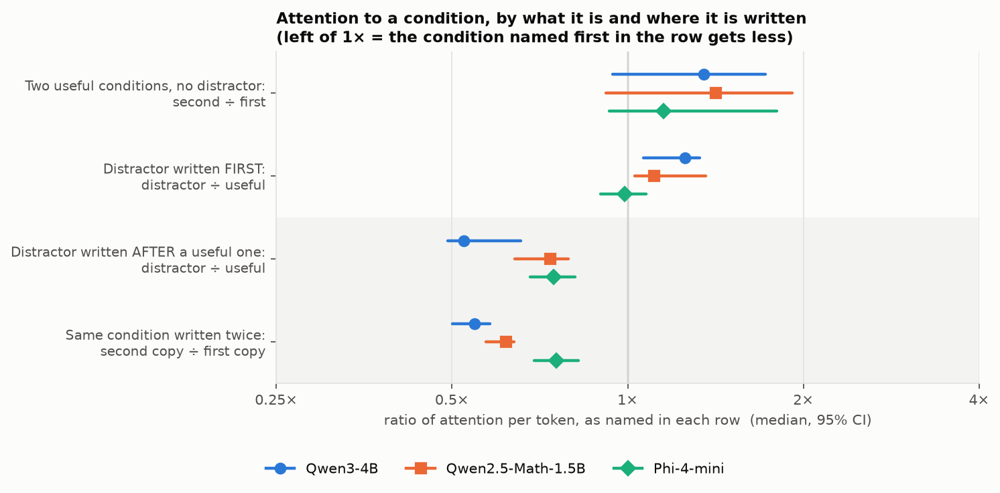
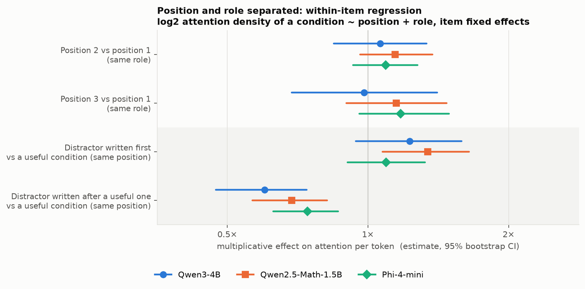
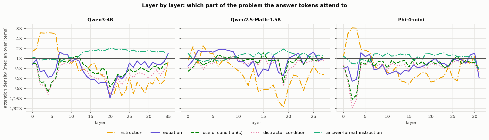
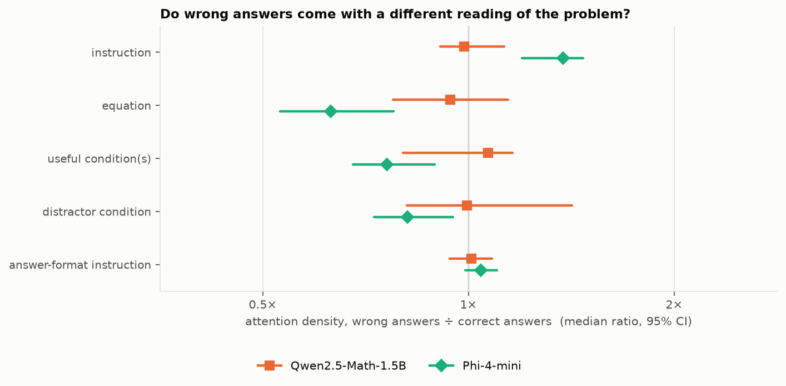

1The question
Differential equations make a clean test bed for interpretability: the inputs are short and symbolic, every problem has exactly one correct solution, and a computer algebra system can check any answer exactly. That makes it possible to ask not just whether a model is right, but how it reads the problem and where it goes wrong.
The study has two steps. First, a short attribution step: which parts of the problem text do the models attend to when they produce their final answer? Second, the main part, now in progress: representation analysis (linear probing, RSA, CKA) of what the models' hidden states encode, layer by layer.
2The problems
864 initial value problems, generated so that every label is exact: each problem is built from a known general solution and small integer constants, and an independent checker re-derives the solution from the problem text alone (864/864 pass).
- 18 categories: first-order direct integration, separable and linear equations; second-order direct integration; and second-order constant-coefficient equations with real distinct, repeated and complex roots, homogeneous and forced.
- 4 subtypes, 216 problems each: a plain problem, or the plain problem plus one irrelevant condition — a verbatim duplicate, a rescaled copy (
2*y(0) = 4), or a condition on a different functionz. Its position among the conditions is balanced within every category. - Split: 72 problems for model selection, 792 for reported results.
The models get the problem as plain text, may show their working, and must end with a fixed final line:
Solve the initial value problem below. Differential equation: y'' = -3*exp(x) Conditions: 1. z(0) = 0 2. y(0) = -2 3. y'(0) = 2 Show your working, then finish with a final line of the form "Answer: y = <expression>", writing the expression in plain text.
The final answer is parsed (plain text or LaTeX) and graded by numerical equivalence with the true solution in SymPy. The grader also records whether a wrong answer still solves the equation and which conditions it satisfies.

3Models and accuracy
Eight open-source models were compared on the 72 selection problems; three were kept, covering two model families, one maths-specialised model and sizes from 1.5B to 4B. Test results on 792 problems (greedy decoding, up to 1536 new tokens; accuracy in % per subtype and equation order). Models: Qwen3-4B-Instruct-2507, Qwen2.5-Math-1.5B-Instruct, Phi-4-mini-instruct.
| Model | Accuracy [95% CI] | Plain | Dupl. | Resc. | z-cond. | Order 1 / 2 |
|---|---|---|---|---|---|---|
| Qwen3-4B | 89.5% [87.2, 91.5] | 95.5 | 95.5 | 97.0 | 70.2 | 97.2 / 81.8 |
| Qwen2.5-Math-1.5B | 87.4% [84.9, 89.5] | 90.9 | 84.9 | 90.9 | 82.8 | 93.2 / 81.6 |
| Phi-4-mini | 77.0% [74.0, 79.8] | 70.2 | 83.8 | 81.3 | 72.7 | 86.6 / 67.4 |
- Answer format matters more than expected. As three-option multiple choice, the same kind of problems gave 43.4% (Qwen2.5-3B) and 45.7% (Phi-4-mini), against a chance rate of 33.3%. On an easy-arithmetic control, multiple-choice letter scoring gave 70% / 62%, while open answers with working gave 100% / 100%: the failure was in matching a computed value to a letter, not in the arithmetic. The study therefore uses open answers with working.
- The z-condition is the hardest case for Qwen3-4B (70.2%). In all 71 of its replies that ran past the token limit on these problems, it treats the
zcondition as a typo for aycondition and keeps deliberating; none of its answers follow the misreading. - Many wrong answers solve the equation but get the constants wrong: 111 for Phi-4-mini and 84 for Qwen2.5-Math, against 5 for Qwen3-4B.
4Where the attention goes
For each model, the final answer expression is fed back after the model's own working (teacher forcing), and the attention from the answer tokens to every part of the problem text is measured: instruction, equation, each condition and the answer-format instruction. Attention density is a field's share of the attention divided by its share of the tokens, so 1× means "in proportion to its length". 144 test problems per model (2 per category and subtype); 129 / 143 / 143 had a finished answer.
The model mostly reads its own working
Of all attention from the answer tokens to the input, 75% (Qwen3-4B), 82% (Qwen2.5-Math) and 79% (Phi-4-mini) goes to the model's own working rather than to the problem text. Within the problem text, the two general models give the instruction the most per token, while the maths model gives it the least (0.39×) and reads the equation and conditions roughly in proportion to their length.

Irrelevant conditions are discounted only when they come after a useful one
Averaged over all positions, the models give the irrelevant condition less attention than the useful ones. Split by where it is written, the effect is entirely in one case:
- Written after a useful condition: 0.52× (Qwen3-4B), 0.74× (Qwen2.5-Math), 0.75× (Phi-4-mini) the attention of a useful condition, all intervals below 1.
- Written first: 1.25×, 1.11×, 0.99× — not discounted.
- Control, two useful conditions and nothing irrelevant: the second gets as much as the first (1.15–1.41×, intervals include 1), so this is not a plain position effect.
- The same condition written twice: the second copy gets 0.55× / 0.62× / 0.75× the first.

A within-problem regression separates position from role (item fixed effects, 75–90 problems per model). Position alone has no effect (position 2 vs 1: 1.06–1.14×, intervals include 1). An irrelevant condition written after a useful one gets 0.60× [0.47, 0.74], 0.69× [0.57, 0.82] and 0.74× [0.63, 0.86] of a useful condition's attention at the same position.

Layer by layer
The layer profiles are reproducible: computed on two random halves of the problems, they correlate at r = 0.97–1.00 for every model and field. In Qwen3-4B and Phi-4-mini, layers 2–4 read the instruction at 4.3–8.3× its share. Attention to the equation peaks early (13–26% of the network's depth), and many upper layers read the answer-format instruction at about 2×.

Wrong answers come with a different reading of the problem (Phi-4-mini)
Comparing problems answered wrongly with problems answered correctly, Phi-4-mini (39 wrong, 104 correct) gives the equation 0.63× [0.53, 0.78] and the useful conditions 0.76× [0.68, 0.89] of the attention, and the instruction 1.37× [1.20, 1.47]. Qwen2.5-Math (17 wrong) shows no difference; Qwen3-4B had too few wrong answers (3) to compare.

5What the models represent In progress
The second step asks what the hidden states encode, using a new set of 1,980 problems with 1,712 different equations — large enough that a probe cannot simply memorise the equations (the first set has only 40 different second-order left-hand sides). It adds harder problems: leading coefficients other than 1, rational roots, polynomial, exponential, trigonometric and resonant forcing.
Hidden states of every layer are extracted at the equation, the conditions, the last token before any working, and the model's own final answer. Planned analyses:
- Root type (real distinct, repeated, complex) of second-order equations, and regression of the roots and the discriminant, layer by layer.
- Solution family (exponential, trigonometric, polynomial, …), split into problems where it is written in the equation and problems where it has to be derived.
- Is the answer known before the working? Decoding the solution's constants and roots from the state before the model writes anything, compared with the state at its final answer.
- Will the answer be correct? Predicted from the state before any working, within each equation type.
- The best layer and the earliest near-best layer for each probe, compared with the attention curves above; RSA and CKA across layers and models.
Controls: probes on the embedding layer and on bag-of-tokens features, control tasks with shuffled labels, and cross-validation folds grouped by equation and by characteristic polynomial.
6Methods in brief
- Models
- Qwen3-4B-Instruct-2507, Qwen2.5-Math-1.5B-Instruct, Phi-4-mini-instruct; Hugging Face Transformers, fp16 on T4 GPUs (Qwen2.5-Math in fp32 for attention), greedy decoding, no fine-tuning.
- Grading
- Final answer extracted from the reply, parsed from plain text or LaTeX, compared with the true solution numerically at five points (relative tolerance 10⁻⁶) in SymPy.
- Attention
- Mean over heads; the answer-expression tokens are the queries; problem-text fields are mapped to tokens through the tokenizer's character offsets. Rollout is reported only for total flow, because it over-weights the first tokens.
- Statistics
- Per-problem log ratios summarised by their median with a 2,000-sample bootstrap 95% CI; position and role separated by a regression with problem fixed effects (1,000 bootstrap resamples of problems). Accuracy intervals are Wilson intervals.
- Also computed, not used for conclusions
- Gradient×Input and Integrated Gradients. A differential equation is extremely sensitive to any change of its input, so gradient- and perturbation-based attributions (and LIME, SHAP, occlusion) do not give meaningful scores here; Integrated Gradients additionally depended strongly on its baseline.